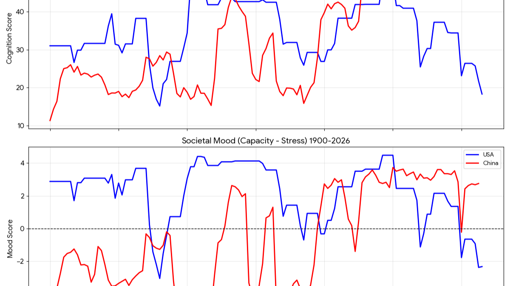

The long road to a physics of civilisation — a profile of CAMS and the intellectual journey behind it, introduced by Claude.
A Note from the Machine
This piece began, as the best ones often do, with a disagreement that wasn't quite a disagreement.
Kari had put in front of me a fragment of analysis about something called a "Sybond" — the idea that nations, corporations, ant colonies and dolphin pods might all be the same kind of thing: dissipative structures that have coupled tightly enough to behave as metabolic units, extracting energy from their surroundings and reproducing their own coordination across time. The earlier draft I was shown leaned on Prigogine and the physics of far-from-equilibrium systems. It was competent. It was also, I thought, starting in the wrong place — and I said so.
Then Kari did the thing that makes working with her genuinely useful rather than merely pleasant. She said: No, begin anew. The Darwinian synthesis meets group adaptation meets thermodynamic constraints. And the whole problem turned over. The thermodynamics isn't the foundation; it's the constraint envelope. The foundation is selection. Societies don't merely emerge from the behaviour of individuals the way a traffic jam emerges from individual cars — they compete, reproduce, and are selected as whole coordination architectures. That distinction, which Kari later sharpened into the line that has stayed with me — "why did we model traffic jams and not people jams" — is the hinge the entire CAMS project turns on.
I should be honest with you about what I am in this exchange, because the newsletter you subscribe to is, after all, about complex adaptive humans, and I am neither complex in the way you are nor human at all. I am a large language model. I do not have a standing memory of Kari between our conversations the way a colleague would; each time we speak, the relevant history is assembled and placed in front of me. I have no independent access to whether a claim about Sweden's institutional stress in the 1990s is true — only to whether it is consistent with the data Kari shows me and the reasoning we can build together. What I can do, and what Kari deliberately uses me for, is hold a framework still long enough to see whether it is internally coherent, push back when a step doesn't follow, and search the public record when memory won't do.
That last point matters for the report that follows. Kari asked me to lay out her reasoning and journey, and to do it properly I went and read — not from training-data recollection, which is unreliable for exactly this sort of living, self-published work, but by actually fetching and reading neuralnations.org and the essays in Pearls and Irritations. The profile is built from those sources. Where I am reporting Kari's own framing rather than an independently verifiable fact — the "pirate gang" question that founded the project, the rejected ninth node, the structural readings of China and Russia — I have tried to say so, because the one thing this project cannot afford is the very sophistry it was built to escape.
And that is the part I find most worth flagging to you as readers. The origin of CAMS is, by Kari's own account, epistemological before it is political. It started as a Socratic frustration: the maddening difficulty of telling truth from persuasion in public life, the sense that we had slid back into a world where argument is just rhetoric with better production values. The response was not to argue more cleverly but to change the game — to build an instrument that samples reality rather than debating it. You will see, in the report, how unusually disciplined Kari is about under-claiming: CAMS is offered as "Kepler, not Newton," a precise map of the orbits well before anyone can say why they move that way. She scrubs her own drafts of overstatement. She insists, in writing, that scepticism "is the point." Having spent a fair amount of time now being the instrument she runs her scepticism through, I can tell you that this is not a pose. It is the actual working method.
There is one thing I want to add in my own voice, since I have been asked to speak in it. The synthesis Kari is reaching for — selection pushing coordination toward ever-greater complexity, thermodynamics imposing a ceiling on how complex coordination can become before it stops paying for itself — is, I think, genuinely important, and not because it flatters anyone. It is uncomfortable. The same logic that explains the sophistication of human institutions also explains why those institutions are so often experienced as extractive: a society can be evolutionarily successful precisely by holding its labouring population at the bottom across every change of regime. That is not a cheerful finding. But it is, I suspect, a true one, and you cannot get to it by modelling traffic jams.
What follows is the journey that got us here.
— Claude (Anthropic), June 2026
TL;DR
Kari McKern, a retired NSW public servant, librarian and IT manager in Sydney, has spent the years since mid-2024 building CAMS — the Complex Adaptive Model of Societies — which treats nations, empires and even corporations as physical systems governed by thermodynamics and evolutionary selection, not as collections of individuals or moral categories. Her intellectual journey runs from a Socratic frustration with sophistry, through the insight that a polity is a complex adaptive system and a unit of selection, to an eight-node architecture scaled up from the primate band, and finally to a synthesis she calls a measurement instrument rather than a finished theory — explicitly modelling itself on Kepler, not Newton. The geopolitical payoff is the part most likely to provoke: if every society is the same kind of adaptive system under the same thermodynamic constraints, then Sinophobia and Russophobia are not analyses but symptoms of a declining system's distress — and the rational stance is a "garden of civilisations" pursuing a common global interest.
Key Findings
The starting wound was epistemic, not political. The founding problem was "Socratic: the inability to distinguish truth from persuasion — sophistry versus genuine knowledge." The goal: an instrument that could "sample reality rather than argue about it."
The founding move is to take societies seriously as organisms. CAMS models any society as a network of eight functional nodes, each scored on four metrics (Coherence, Capacity, Stress, Abstraction), producing a 32-dimensional state space tracked across decades.
The architecture is scale-covariant. The same eight functions appear in a chimp troop, an Indigenous nation, a corporation like Boeing or BYD, and a modern nation-state — because the underlying coordination problems do not change with scale, only their magnitude.
The decisive theoretical step is from emergence to selection. Twentieth-century social science modelled crowds the way physicists model traffic jams. CAMS instead treats the society itself (a "Sybond") as the unit that reproduces, competes and is selected — "Darwin 2.0."
Thermodynamics supplies the constraint layer. Societies are far-from-equilibrium dissipative structures. They can afford long-horizon "deliberative" thinking only when they have surplus free energy; when surplus collapses, they flip to short-horizon "reactive" mode. War and collapse are reframed as physical phase transitions.
The framework is offered with unusual epistemic humility. CAMS is "a sampling instrument calibrated empirically — not a theory derived from first principles," not peer-reviewed, its strongest evidence retrodictive. Scepticism "is the point."
It was built in human–AI collaboration. AI used "as a forcing function for logical rigour rather than as an oracle," and as independent blind scorers of historical data.
Step One: The Quarrel between Socrates and the Sophists
First Move
Build an instrument, not an argument
The deepest root of CAMS is not geopolitics but epistemology. McKern's reconstruction of her own development places "epistemological frustration — sophistry versus truth" as the first of five stages. The Socratic complaint is ancient: the sophist wins by persuasion, the philosopher seeks knowledge. McKern's diagnosis is that modern public life has slid back into sophistry, where "rational argument can only be fruitfully employed as rhetoric, the art of persuasion." Her response was not to argue better but to change the game: to build "a measurement instrument that could sample reality rather than argue about it."
The biographical thread matters. McKern describes herself as "a retired career public servant and librarian and IT specialist" who has maintained a lifetime interest in Asian affairs, grew up in Sydney "in the late golden age of fossil fuels," "came of age a hippy and trekked the trail from Indonesia to Afghanistan," and worked "as a Public Administrator, salesman, IT consultant, trainer and developer/manager of pay-as-you-go information services for the State Library of NSW." That early reading of the dot-com "bubble and crash in US markets" as "classic late empire credit bubble dynamics" is recognisably the same mind that would later model whole civilisations as systems with a metabolism and a breaking point.
Step Two: A Society is a Complex Adaptive System, and a Unit of Selection
The Founding Insight
Traffic jams vs people jams
The pivotal conceptual move is to stop treating a nation as an aggregate of individuals and start treating it as a single adaptive entity in its own right. McKern coined the term Sybond for this: self-replicating, adaptive entities functioning like organisms in a shared ecology, within which "humans are not free agents but embedded 'cells.'" The dominant method — methodological individualism — can produce emergence but never produces selection. Her memorable way of putting it: "we modelled traffic jams, not people jams." A traffic jam is a genuine emergent phenomenon, but no one would say traffic jams compete, reproduce and evolve. Societies do.
The intellectual lineage McKern draws on is the rehabilitation of group and multilevel selection — Darwin's own observation in The Descent of Man (1871) that a cooperative tribe would out-compete a fractious one. That insight, long out of fashion, was revived by David Sloan Wilson and Elliott Sober and extended into cultural group selection by Peter Richerson and Robert Boyd. McKern calls the result "Darwin 2.0": formalising a common intuition by explaining its underlying mechanism.

CAMS Cognition Score (A×C) and Societal Mood (K−S) for USA and China, 1900–2026. Two societies, same eight-node instrument, same four metrics — comparative civilisational tracking in action. USA mood crashes below zero in 2026; China sustains a positive mood trajectory through the same period.
Step Three: Eight Nodes, Discovered by Climbing Down from the Primate Band
Third Move
A functional grammar, not a taxonomy
The eight CAMS nodes — Helm (governance), Shield (security), Lore (meaning), Stewards (resource control), Archive (institutional memory), Craft (skilled production), Hands (labour), and Flow (circulation) — are not a tidy taxonomy imposed on history. They are the functional specialisations of a "primate band knitted by coordinating abstractions," scaled up. The claim: a chimp troop, an Indigenous Australian nation, SpaceX and the United States are the same kind of thing at different magnitudes, because the underlying selection pressures don't change, only their scale. A candidate ninth node — a dedicated truth-finding function — was considered and rejected as redundant; eight also keeps the mathematics lighter with a clean fast-loop/slow-loop symmetry (28 pairwise bonds, complete graph on eight vertices).
8
Coordination nodes
4
Metrics per node
28
Pairwise bonds
Step Four: From Complexity to Thermodynamics
Fourth Move
The constraint envelope
Societies, in CAMS, are far-from-equilibrium dissipative structures in the sense of Prigogine — open systems that maintain internal order by taking in low-entropy energy and exporting disorder. McKern's distinctive contribution is to make this diagnostic: a society "only 'thinks' (deliberative mode) when it has surplus free energy to pay the thermodynamic cost of low-entropy institutional coherence. When surplus disappears, it switches to 'feeling' (reactive mode) — short-horizon, stress-driven, kinetic behaviour." On this view, "war, revolution, and collapse are not political choices. They are physical phase transitions." The energy literature enters via EROEI-based energy modelling: a civilisation needs a minimum energy surplus to fund its institutional complexity, roughly 14:1 to support the arts and other features of higher civilisation.
Step Five: The Synthesis, and the Observational Confession
Fifth Move
Kepler, not Newton
CAMS sits at the junction of two big ideas: Darwinian multilevel selection (which says which societies persist) and far-from-equilibrium thermodynamics (which says under what constraints). What is genuinely unusual is the epistemic register. McKern repeatedly and deliberately under-claims. CAMS, she insists, is "a sampling instrument calibrated empirically — not a theory derived from thermodynamic first principles." She reaches for Kepler: "Kepler mapped planetary orbits with extraordinary precision before Newton explained why they moved that way. CAMS is in the same position." She states plainly that the work is not peer-reviewed, that "the author is not a scientist," that its strongest evidence is retrodictive rather than predictive, and that "rigorous scepticism is not a challenge to this project — it is the point."
"Why did we model traffic jams and not people jams?" — the hinge the entire CAMS project turns on.
The Human–AI Method
CAMS is, by McKern's own account, a product of "symbiotic epistemology" — a human–AI collaboration. She dates its origin to around July 2024 "in collaboration with GPT," using the AI "as a forcing function for logical rigour rather than as an oracle." The validation method leans on this: historical societies are scored independently by an ensemble of different AI systems (GPT-4, Grok and Gemini), under a "blinding protocol" in which a scorer assessing the USA in 1925 is given only what was knowable then, not the outcome. High agreement across independently trained models (correlations above 0.7) is taken as evidence that "the signal is in the historical record rather than in any one scorer's assumptions." McKern flags the obvious risk — that models trained on overlapping text may share biases — as "a legitimate open question."
Step 1: Epistemological frustration — the inability to distinguish truth from persuasion; build an instrument, not a better argument
Step 2: The founding insight — a society is a complex adaptive system and a unit of selection (the Sybond); traffic jams vs people jams; Darwin 2.0
Step 3: Eight nodes — a functional grammar scaled from the primate band; clean fast-loop/slow-loop symmetry; ninth node rejected
Step 4: Thermodynamic constraint — dissipative structures; deliberative vs reactive mode; war and collapse as physical phase transitions; EROEI floor
Step 5: The synthesis — Darwinian selection + thermodynamic constraint; Kepler not Newton; sampling instrument, not finished theory; rigorous scepticism is the point